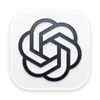
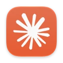
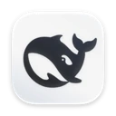
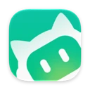
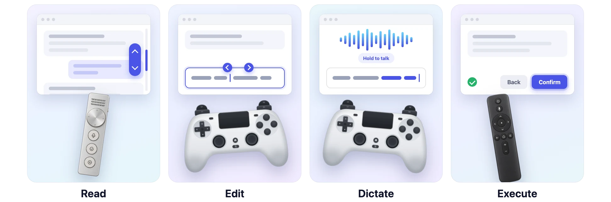
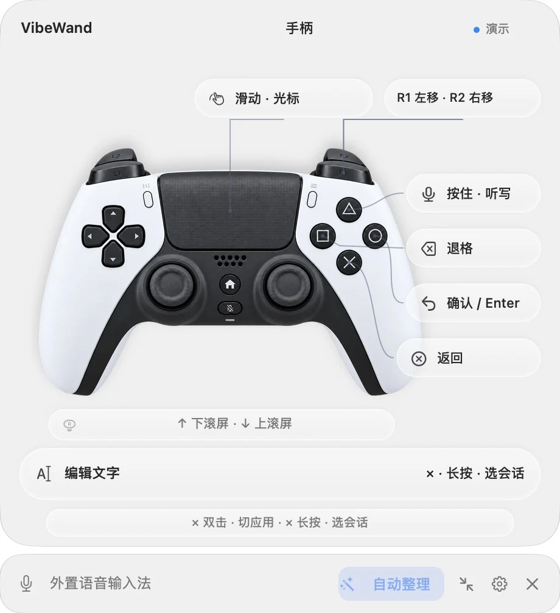
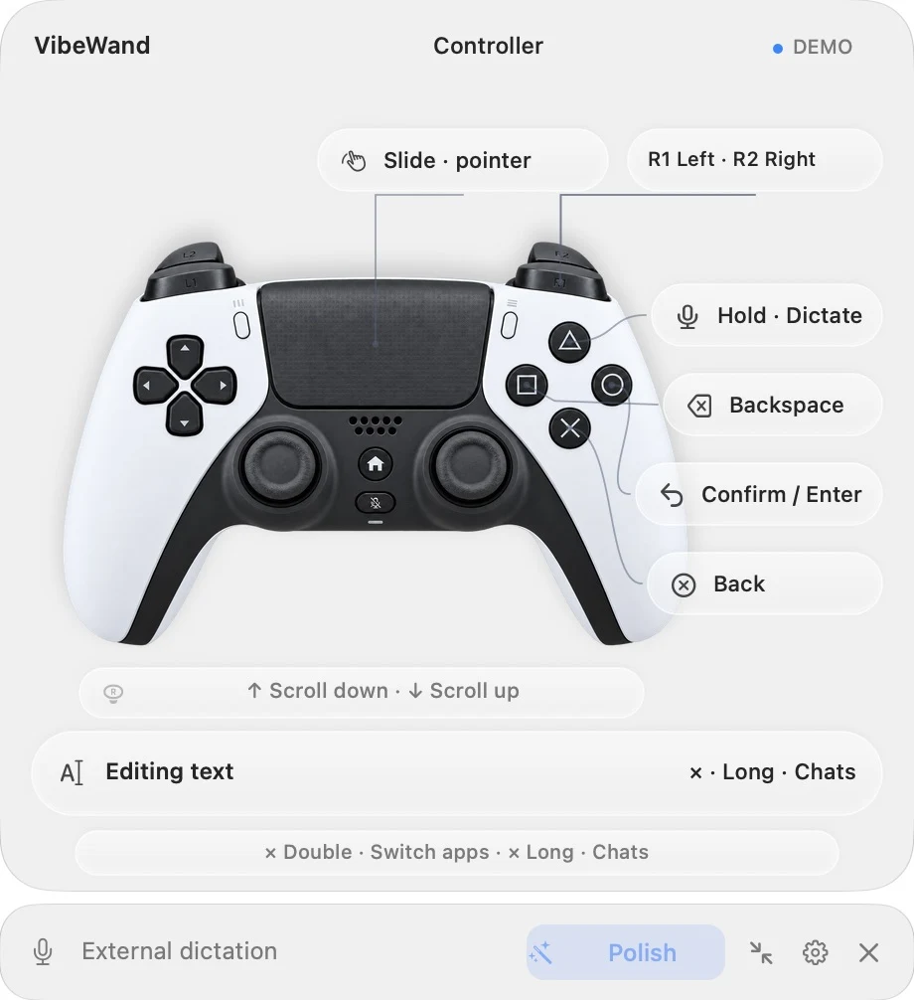
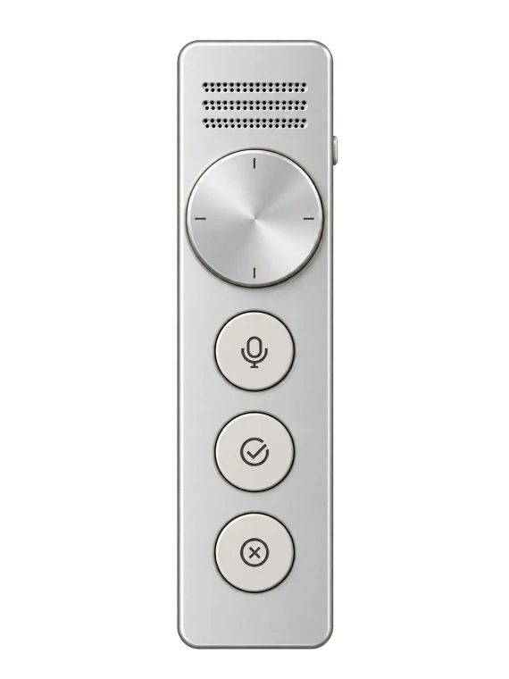
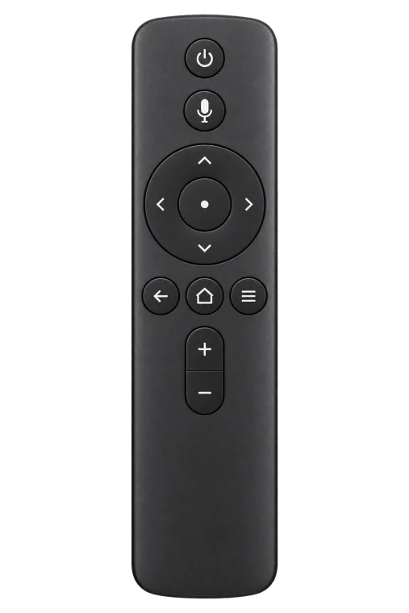

01
读Read
转旋钮或推摇杆滚动对话。输入框里有字时，同一个动作改成移动光标。
Turn the dial or push a stick to scroll the conversation. Once the draft has text in it, the same motion moves the cursor instead.
如意魔棒
One wand to command them all.
一个旋钮、手柄或遥控器，再加一句话，操作 Mac 上的各种 AI 工具。
A dial, a game controller or a remote, plus a spoken sentence, for driving the AI tools on your Mac.

Codex
Claude
DeepSeek Harness
WorkBuddy还有 iTerm2 里的 Claude Code、Codex、OpenCode，以及 Edge、Brave、Firefox、Opera、Vivaldi。
Also Claude Code, Codex and OpenCode in iTerm2, and Edge, Brave, Firefox, Opera and Vivaldi.
macOS 26 以上 · M 系列芯片 · 约 84 MB
macOS 26 or later · M-series Mac · about 84 MB

为什么Why
读回复、翻会话、换模型、说一句话，然后等。这些事一只手就够了。VibeWand 把它们放到一个旋钮或手柄上，人可以靠在椅背上干活。
工具越来越多，每个都有自己的会话列表、模型菜单和快捷键。VibeWand 不替代其中任何一个，只把它们收到同一组动作后面：在哪个应用里都是同一个旋钮读、同一个键说、同一下切换，活儿还是你选的那个软件干。统一的是入口，不是功能。
You read a reply, flip between chats, change the model, say a sentence, and wait. One hand is enough for all of that. VibeWand puts it on a dial or a controller so you can lean back while you work.
The tools keep multiplying, and each has its own chat list, model menu and shortcuts. VibeWand replaces none of them. It puts them behind one set of motions: the same dial reads, the same button listens and the same press switches in every app, and the work is still done by the software you chose. What is unified is the way in, not the features.
能做什么What it does
转旋钮或推摇杆滚动对话。输入框里有字时，同一个动作改成移动光标。
Turn the dial or push a stick to scroll the conversation. Once the draft has text in it, the same motion moves the cursor instead.
按住麦克风键说话，松开后文字出现在输入框里，不会替你发送。可以用自带的识别（系统听写或你自己的语音 API），它用你手里那个设备的麦克风录音，还能填自己的词表；也可以继续用 Typeless、豆包这类输入法。
Hold the microphone button and talk. When you let go, the text is in the composer, and nothing is sent for you. Use the built-in recognition (macOS dictation or your own speech API), which records from the microphone of the device you are holding and takes your own vocabulary, or keep using an input method such as Typeless.
按一下打开会话列表，转动选择，再按确认。长按调推理强度、换模型。双击切换 macOS 应用。
Press once for the chat list, turn to choose, press to confirm. Long-press for reasoning effort and models. Double-press to switch macOS apps.
每个按键的单击、双击、长按都能在设置里重新分配，每种设备各存一套。
Every button's press, double press and long press can be reassigned in Settings, and each device keeps its own layout.
按住命令键说一句话，它替你找到并打开：
Hold the command key and say a sentence, and it finds and opens it for you:
模型由你选：DeepSeek、OpenAI、Anthropic、本机模型或任何兼容的地址，配好就能用；也可以作为插件跑在你自己装的 DeepSeek Harness 上，在那里看每段对话、配模型。
The model is yours to choose: DeepSeek, OpenAI, Anthropic, a local model or any compatible address. It works as soon as one is set up, and can instead run as a plugin of a DeepSeek Harness you installed yourself, where each conversation can be read and models are set up.


屏幕上有个悬浮面板，告诉你当前每个键会做什么。嫌占地方可以收成一条，展开和收起的按钮始终在同一个位置。
A floating overlay shows what each button will do right now. It collapses into a thin bar when you want it out of the way, and the button that expands and collapses it never moves.
支持的设备Devices


几个设备可以同时连着。在哪个上面按键，面板和按键布局就跟到哪个，不用进设置切换。蓝牙手柄闲置十来分钟会自己关机，设置里有个“保持手柄唤醒”的开关。
Several devices can stay connected at once. Press a button on one and the overlay and button layout follow it; there is nothing to switch in Settings. A Bluetooth controller powers itself off after about ten idle minutes, so Settings has a “Keep the controller awake” switch.
VibeWand 是独立项目，与 Ulanzi、Sony、小米及其他设备厂商没有隶属、合作、赞助或背书关系。产品名称与商标归各自所有者。设备图为示意渲染，不是产品照片。
VibeWand is an independent project. It is not affiliated with, sponsored by or endorsed by Ulanzi, Sony, Xiaomi or any other device maker. Product names and trademarks belong to their owners. Device images are illustrative renders, not product photographs.
支持的应用Apps
| 程序Program | 滚动 |
切换 |
换模型Change model | 调推理 |
听写Dictate |
|---|---|---|---|---|---|
Codex |
✓ | ✓ | ✓ | ✓ | ✓ |
Claude |
✓ | ✓ | ✓ | ✓ | ✓ |
DeepSeek Harness |
✓ | ✓ | ✓ | ✓ | ✓ |
WorkBuddy |
✓ | ✓任务tasks | ✓ | — | ✓ |
Claude Code · Codex · OpenCode在 iTerm2 里in iTerm2 |
✓ | ✓ | ✓ | ✓仅 CodexCodex only | ✓ |
浏览器BrowsersSafari、Chrome、Edge、Brave、Firefox、Opera、VivaldiSafari, Chrome, Edge, Brave, Firefox, Opera, Vivaldi |
✓ | ✓标签页tabs | — | — | ✓ |
微信 · 飞书 / LarkWeChat · Feishu / Lark |
✓ | ✓聊天chats | — | — | ✓ |
不在表里的应用也有三件事能用：听写跟着键盘焦点走，松开后文字就在输入框里；双击切换 macOS 应用；手柄触摸板移动指针和点击。想让别的应用也响应切换会话和换模型这两个键，在设置里添加它并指定快捷键。每个应用的适配都能在设置里单独关掉。
Three things work in apps that are not in the table. Dictation follows the keyboard focus, and the text is in the field when you release. A double press switches macOS apps. The controller's touchpad moves the pointer and clicks. To make another app answer the chat and model buttons, add it in Settings and assign the shortcuts. Each app's support can be turned off in Settings.
浏览器里没有模型可换，同一个键改为跳到地址栏。微信的聊天控件读不到，会话键只是打开它自己的搜索，选择结果还没有在真实应用里验证过。应用的名称和图标是各自所有者的商标，这里只用来说明兼容性；VibeWand 与它们没有隶属、赞助或背书关系。
A browser has no model to change, so the same button jumps to the address bar. WeChat's chat controls cannot be read, so the chat button only opens WeChat's own search, and choosing a result there has not been verified in the real app. App names and icons are trademarks of their owners, shown only to indicate compatibility; VibeWand is not affiliated with, sponsored by or endorsed by them.
Computer use
VibeWand 干的是 computer use 这类事：看懂前台应用的界面，替你操作它。它读的是 macOS 辅助功能给出的控件结构，和读屏软件拿到的是同一份。动作要么来自你按的键，要么来自你说的一句话。
What VibeWand does is computer use: it works out what the front app is showing and operates it for you. It reads the control structure that macOS Accessibility provides, the same one a screen reader gets. An action starts either from a button you press or from a sentence you say.
文字停在输入框里，回车由你按。命令模式默认只在删除、发送、提交、支付这类操作前问你；可以改成每一步都问，或者完全不问。
Text stays in the field, and Return is yours to press. By default command mode asks only before deleting, sending, submitting or paying; you can have it ask at every step, or not at all.
应用、窗口或焦点变了，动作作废。
If the app, window or focus has changed since you pressed, the action is dropped.
输入框只知道空不空；不读会话正文和文档，不截屏，不往密码框里写字。终端没有控件，只读光标旁的几行来找提示符，归约成状态就丢弃。
A field is known only as empty or not. Conversation text and documents are not read, no screenshot is taken, and nothing is typed into a password field. A terminal has no controls, so only the few rows next to the cursor are read to find the prompt, reduced to a state and dropped.
配置不执行脚本，模型够不到工具表以外的东西。
Configuration runs no scripts, and the model cannot reach anything outside its tool list.
安装Install
需要 macOS 26 以上和 M 系列芯片。解压后把 VibeWand.app 拖进“应用程序”，然后打开它。
Requires macOS 26 or later on an M-series Mac. Unzip, drag VibeWand.app into Applications, and open it.
这个版本是临时签名，没有做 Apple 公证。首次打开如果被 macOS 阻止，在“系统设置 → 隐私与安全性”里允许，见 Apple 的说明。
This build is ad-hoc signed and not notarized by Apple. If macOS blocks the first launch, allow it under System Settings → Privacy & Security; see Apple's guide.
隐私Privacy
设备输入和配置都在本机处理。听写用外置输入法时，它只替你按住 Fn；用内置识别时，录音只留在内存里，系统听写能离线就离线，语音 API 模式会把录音发到你自己填的地址。密钥存在 macOS 钥匙串里，导出配置不会带上。听写的文字只写进输入框，发不发由你决定。
命令模式默认开启，但在你配好模型之前什么都不做，也不联系任何服务。配好以后，你说出的命令、应用和会话的标题，以及操作界面时前台窗口控件上的文字，会发给你自己选的模型服务；输入框和文档的内容不会。每条命令的过程记录在本机，14 天后删除。
Device input and configuration stay on your Mac. With an external input method VibeWand only holds Fn for you. With built-in recognition, audio stays in memory; macOS dictation runs on device when it can, and API mode sends audio to the endpoint you entered. Keys live in the macOS Keychain and are never part of an exported configuration. Dictated text goes into the field and no further; sending it is up to you.
Command mode is on by default, and until you set up a model it does nothing and contacts no service. After that, the words of your commands, the titles of apps and chats, and the labels of controls in the front window while the interface is operated are sent to the model service you chose yourself. The contents of fields and documents are not. What each command did is recorded on your Mac and deleted after 14 days.